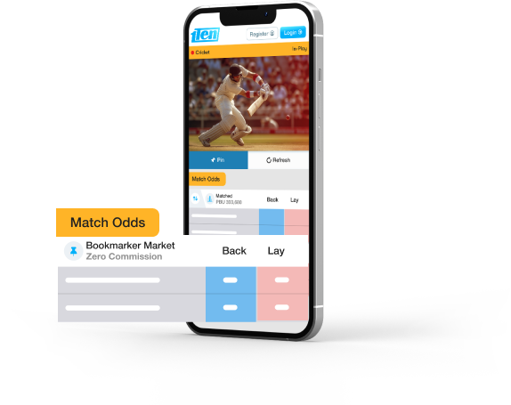
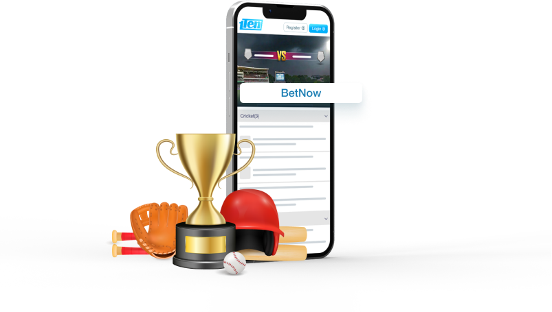
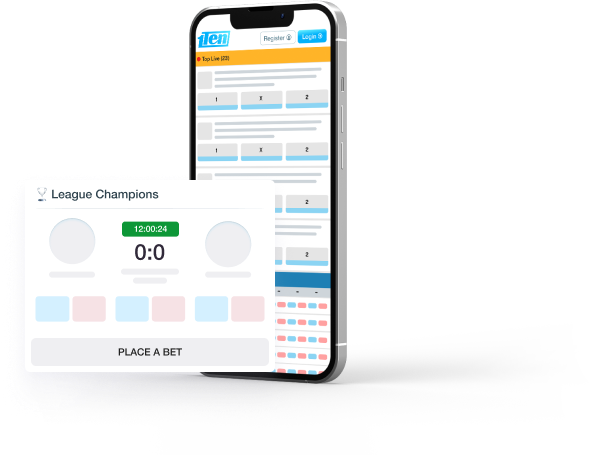
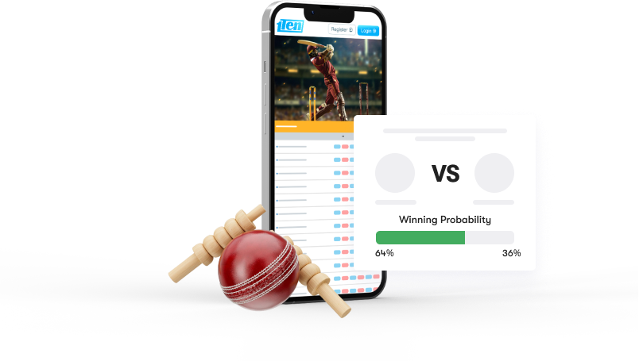
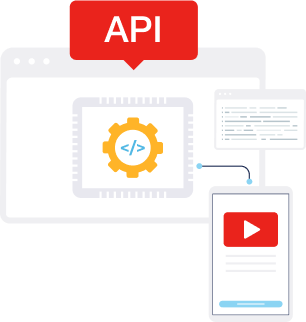

Who Can Use the Cricket Data Feed API?
Sports Websites: Keep your audience engaged with real-time scores, live updates, and detailed match statistics.
Mobile App Developers: Integrate our API to provide users with instant access to match details, player profiles, and ball-by-ball commentary
Fantasy Cricket Platforms:Enhance your platform with accurate and up-to-date data to keep players informed and engaged.
Media Outlets:Keep your audience engaged with real-time scores, live updates, and detailed match statistics.
Fancy Sports API
A Fantasy Sports API is crucial for anyone looking to develop or enhance a fantasy sports platform. This API allows developers to integrate real-time data, including player statistics, match results, and team performance, directly into their fantasy sports applications. Using a Fantasy Sports API, you can provide users with up-to-date information, helping them make informed decisions about their fantasy teams.
Whether you're building a fantasy football league, cricket fantasy game, or any other sport, a Fantasy Sports API enables you to deliver live scores, player rankings, injury updates, and more. This ensures your platform remains engaging, competitive, and accurate, giving users the best experience possible.

Cricket Match odds API
Our Cricket Match Odds APIis a powerful tool that provides real-time betting odds for cricket matches across all formats, including T20, ODI, and Test series. This API is perfect for platforms that enhance user engagement by offering accurate and up-to-date odds information. Whether running a sports betting site, a predictive analysis platform, or a cricket-related app, our Cricket Match Odds API ensures your users can access the latest odds, helping them make informed decisions.
Combined with ourCricket Scores API you can deliver a comprehensive cricket experience, providing live scores and betting odds in real-time. This integration is essential for any platform offering complete and reliable cricket content.

Cricket Sportsbook API
Our Cricket Bookmaker API is essential for platforms offering cricket betting services. It provides real-time access to betting odds, markets, and detailed match data across all formats, including T20, ODI, and Test matches. This API allows you to deliver accurate and timely betting information, enhancing the experience for your users by enabling informed betting decisions.
Combined with our Cricket Scores API, you can offer a comprehensive cricket betting platform that delivers live scores and betting odds in one seamless interface. This integration ensures users can access the most up-to-date match information and betting opportunities, making your platform more engaging and reliable. Whether for a betting site or a sports app, our APIs are designed to elevate the user experience.

Cricket bookmaker API
Our Cricket Bookmaker API is essential for platforms offering cricket betting services. It provides real-time access to betting odds, markets, and detailed match data across all formats, including T20, ODI, and Test matches. This API allows you to deliver accurate and timely betting information, enhancing the experience for your users by enabling informed betting decisions.
Combined with our Cricket Scores API, you can offer a comprehensive cricket betting platform that delivers live scores and betting odds in one seamless interface. This integration ensures users can access the most up-to-date match information and betting opportunities, making your platform more engaging and reliable. Whether for a betting site or a sports app, our APIs are designed to elevate the user experience.

Cricket Score API
Our Cricket Score API is a powerful tool that provides real-time access to live cricket scores. It offers comprehensive coverage across all formats, including T20, ODI, and Test matches. This API ensures that your platform can deliver up-to-the-minute scores, detailed match statistics, and player information to keep your users informed throughout the game. By integrating our Cricket Score API with the Cricket Scores API, you can enhance the user experience by offering a complete and seamless cricket information service. This integration allows users to track live match progress, view player stats, and access historical data, all in one place. Whether for a sports app, website, or any cricket-related platform, our APIs provide reliable and accurate cricket data, ensuring user engagement and satisfaction.

Live Tv API Coverage
Our Live TV API offers an unparalleled viewing experience by enabling platforms to stream live cricket matches directly to their users. This API ensures seamless integration with your platform, delivering high-quality live broadcasts of cricket events, from T20 and ODI to Test series. By combining our Live TV API with the Cricket Scores API, you can enhance the user experience by providing live scores and match updates alongside the live broadcast. This integration allows users to follow the game in real time while accessing detailed statistics and scores, all in one place. Whether for a sports app, website, or OTT platform, this combination delivers a comprehensive cricket experience that keeps users engaged and informed.